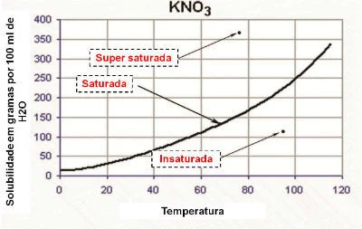

Solubilidade é a propriedade física das substâncias de se dissolverem, ou não, em um determinado líquido.
Denomina-se soluto, os compostos químicos que se dissolvem em outra substância. O solvente é a substância na qual o soluto será dissolvido para formação de um novo produto. A dissolução química é o processo de dispersão do soluto em um solvente, dando a origem a uma solução ou mistura homogênea. Os solutos podem ser classificados em:- Solúvel: são os solutos que se dissolvem no solvente.
- Pouco solúvel: são os solutos que apresentam dificuldade de se dissolver no solvente.
- Insolúvel: são os solutos que não se dissolvem no solvente.
- Os hidrocarbonetos, compostos presentes na gasolina, são apolares e apresentam pouca solubilidade em água, que é polar.
- Os álcoois, como o etanol e o metanol, são polares devido à presença do oxigênio na cadeia carbônica e, por isso, são solúveis em água.
- Os sais apresentam solubilidade diferenciada. Eles podem ser classificados em: sal solúvel e sal praticamente insolúvel.
Coeficiente de Solubilidade
O coeficiente de solubilidade (Cs) determina a capacidade máxima do soluto que se dissolve em uma determinada quantidade de solvente. Isso, conforme as condições de temperatura. Em resumo, o coeficiente de solubilidade é a quantidade de soluto necessária para saturar uma quantidade padrão de solvente a uma determinada condição. Por exemplo, considere a seguinte situação: Em um copo de água com sal (NaCl), inicialmente, o sal desaparece na água. Entretanto, se for adicionado mais sal, em determinado momento ele começará a se acumular no fundo do copo. Isso acontece porque a água, que é o solvente, atingiu o seu limite de solubilidade e a quantidade máxima de concentração. A isso também chamamos de ponto de saturação. O soluto que resta no fundo do recipiente e que não se dissolve é chamado de corpo de fundo ou precipitado. Em relação ao ponto de saturação, as soluções classificam-se em três tipos:- Solução insaturada: quando a quantidade de soluto é menor que Cs.
- Solução saturada: quando a quantidade de soluto é exatamente a mesma do Cs. É o limite de saturação.
- Solução supersaturada: quando a quantidade do soluto é maior que o Cs.
Produto de Solubilidade
Como vimos, a solubilidade representa a quantidade de soluto dissolvida em uma solução. O produto de solubilidade (Kps) é uma constante de equilíbrio diretamente relacionada com a solubilidade. O seu cálculo permite determinar se uma solução é saturada, insaturada ou saturada com precipitado. Esse cálculo está relacionado com o equilíbrio de dissolução e a concentração de íons na solução. Isso porque o produto da solubilidade refere-se ao equilíbrio de dissolução de substâncias iônicas.Curva de Solubilidade
A capacidade de solubilidade química de uma substância submetida à alteração de temperatura não é linear. A variação da capacidade de solubilidade, em função da temperatura, é conhecida por curva de solubilidade. A maioria das substâncias sólidas têm o seu coeficiente de solubilidade aumentado com o aumento da temperatura. Assim, a solubilidade de cada material ocorre de maneira proporcional, conforme a temperatura. Cada substância possui uma curva de solubilidade própria para um determinado solvente. A variação de solubilidade é considerada linear quando não está sob influência da temperatura. Para conhecer a variação é preciso observar a curva de solubilidade.  No gráfico, a curva de solubilidade demonstra que a solução é:- Saturada: quando o ponto está sobre a curva de solubilidade.
- Insaturada: quando o ponto está abaixo da curva de solubilidade.
- Saturada homogênea: quando o ponto está acima da curva de solubilidade.